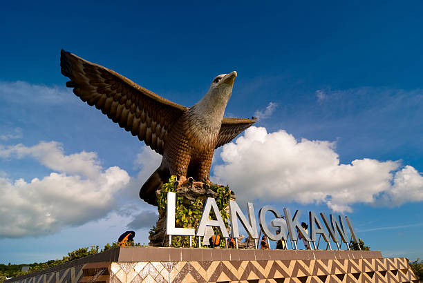
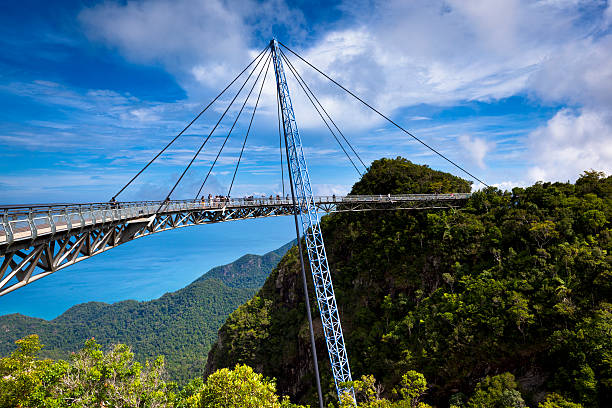
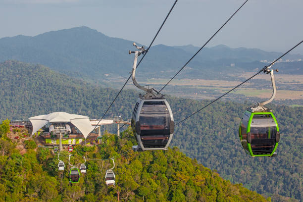
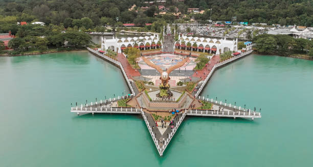

Introduction

Langkawi, officially known by its sobriquet Langkawi, the Jewel of Kedah (Malay: Langkawi Permata Kedah), is a duty-free island and an archipelago of 99 islands (plus five small islands visible only at low tide in the Strait of Malacca) located some 30 km off the coast of northwestern Malaysia and a few kilometres south of Ko Tarutao, adjacent to the Thai border. Politically, it is an administrative district of Kedah, with Kuah as its largest town. Pantai Cenang is the island's most popular beach and tourist area.
Attraction
Langkawi Sky Bridge
The Langkawi Sky Bridge is a 125-metre-long curved pedestrian bridge that offers an exhilarating view of the verdant Gunung Mat Cincang, the Telaja Tujuh waterfalls, and several islets surrounding Langkawi. Set 700 metres above sea level, it's only accessible via the final station of the Langkawi Cable Car. It's fitted with double steel railings, an enclosed wire mesh, and 2 triangular platforms where you can relax and enjoy the cool breeze.


Langkawi Cable Car
The Langkawi Cable Car takes you on a 15-minute ride to the top of Gunung Machinchang. Along the way, you can enjoy breathtaking views of Langkawi’s lush rainforests, islets, and waterfalls. After reaching the 708 metre-tall peak, you can enjoy the cool breeze, grab a quick bite, browse through many souvenir stalls. Remember to take lots of photos from the observatory deck.
Eagle Square
Eagle Square, is a striking 12-metre-tall sculpture of an eagle poised to take flight. The statue is displayed on an elevated platform in Kuah. This prominent landmark is just a 5-minute walk from the Kuah Jetty, Jetty Point Mall, Taman Lagenda Dalam Langkawi, as well as numerous restaurants and duty-free shops.

Activity
.jpg)
Snorkeling
Snorkeling in is a famous recreational activity in Malaysia that enables you to observe the beauty of underwater life. In fact, the best way to discover the underwater life of the Andaman Sea is through snorkeling. The coral reefs are best explored in the shallow water of the islands of Langkawi. Make sure you wear the right costume for proper safety like snorkel, eye mask, and fins. Snorkeling is best experienced at the below-mentioned spots in Langkawi.
.jpg)
Scuba Diving
Scuba diving is one of the major attractions for tourists visiting Pulau Payar Marine Park in Langkawi. The most popular spot is located at the Pulau Payar Marine Park which is a cluster of a number of islands. The operators usually approach tourists on the ferry to know their interest and needs. You can also attain a diving tour that is held for a duration of about two hours and performs the dives in four distinct islands.
.jpg)
Riding CableCar
Experience the thrill of the Langkawi SkyCab as you soar to the summit of the 550 million-year-old Mount Machinchang for a breathtaking bird's-eye view of untouched treetops. Admire the engineering marvel of the world's longest free-span and curved bridge, the Skybridge. At the foothill, the Oriental Village offers a variety of exciting attractions, including 3D Art Langkawi, SkyDome, SkyRex, 6D cinemotion, and Petland.